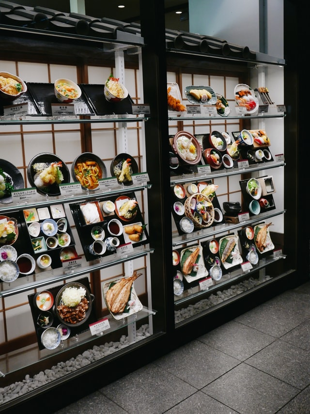
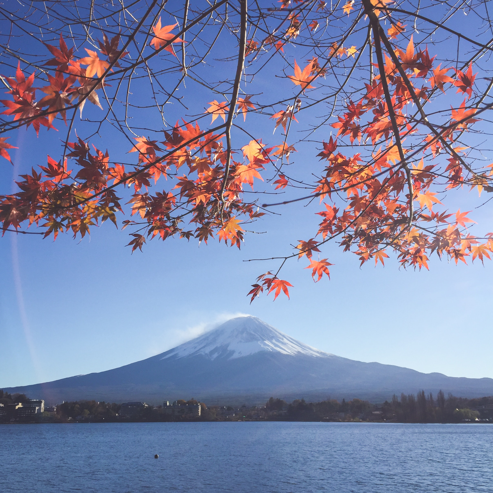
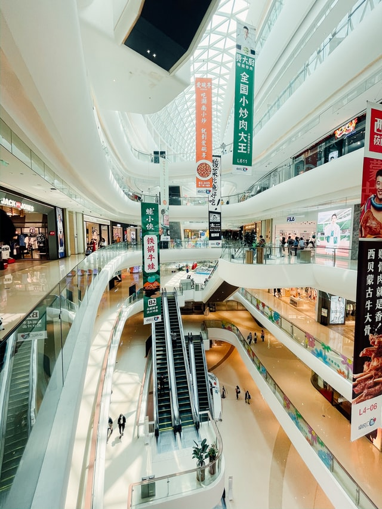

Interesting Facts About Tokyo
Tokyo is the largest metropolitan area in the world, hosting over 36 million people spread over three prefectures.• Tokyo was formerly known as “Edo” in the 20th century. The name was changed to Tokyo in 1890 in light of the Meiji Restoration.The metropolitan area is the largest industrial, commercial, and financial centre in Japan. Many domestic and international financial institutions and other businesses are headquartered in central Tokyo. The city is an important wholesale centre, where goods from all parts of the country and the world are distributed. Tokyo is part of the Keihin Industrial Zone, centred on the western shore of the bay, which has become the country’s leading manufacturing region. Light and labour-intensive industries predominate in the city, notably printing and publishing and the manufacture of electronic equipment.
Tokyo Tower
The Eiffel tower inspired structure is the second tallest building in Tokyo. Standing at 332.9m tall, it is an excellent place to take in the magnificent view that Tokyo offers.• The Tokyo Tower is a communications and observation tower in the Shiba-Koen district. It was originally inspired by the Eiffel Tower, hence their similar appearance
Cherry blossom
The cherry blossom is the national symbol of Japan. These trees flower for one or two weeks a year starting in April. This period is known as Hanami, the long standing tradition of welcoming spring. This festival is about appreciating the temporary beauty of nature.
Vending Machines
Vending machines are everywhere! There are vending machines roughly every 12 meters in Tokyo, so you never have to worry about getting thirsty! It is estimated that about 3% of Japan’s power goes toward powering vending machines.
You can see Mount Fuji from Tokyo on a clear day
Mount Fuji is one of the major icons of Japan, and if you’re lucky to visit Tokyo on a clear day, you can see Mount Fuji from several places in the city. The Metropolitan Government building is one of the most popular places to view Mount Fuji from a distance.

Tax heaven
Tokyo is one of the best shopping destinations in the world.Tourists can take advantage of tax free shopping, which is available to foreign tourists at licensed stores when making purchases of over 5000 yen. A passport is required when shopping tax-free. Head over to Ginza, the world-renowned shopping district, for major international labels including Chanel, Cartier and Bulgari. For those looking for more unusual or cutting-edge trends, the Harajuku and Omotesandō neighbourhoods are the place to go.
